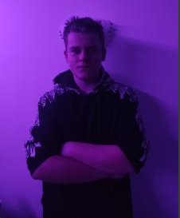
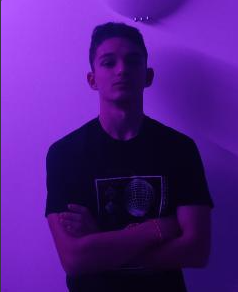
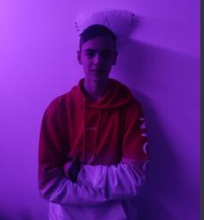

Pospalankovci team
Home Todor Anton Boris Ivan Stoyan

Todor Stoimenov - leadership/presentation

Anton Stankov - java web application
Антон Станков - 14 годишен, завършил 49 ОУ "Бенито Хуарес", разработчик за Java Application/Java BackEnd чрез Spring Boot, както и JavaScript Front End, занимал се със C#, C, Java, HTML, CSS, JavaScript.

Boris Stoyanov - web developement

Ivan Lambev - website developement
Иван Ламбев - 14 годишен, завършил 139 ОУ "Захарий Круша" , разработчик на уеб сайта/ front end чрез html, css, занимавъл се е със C, HTML, CSS, JavaScript.

Stoyan Babanov - presentation/information